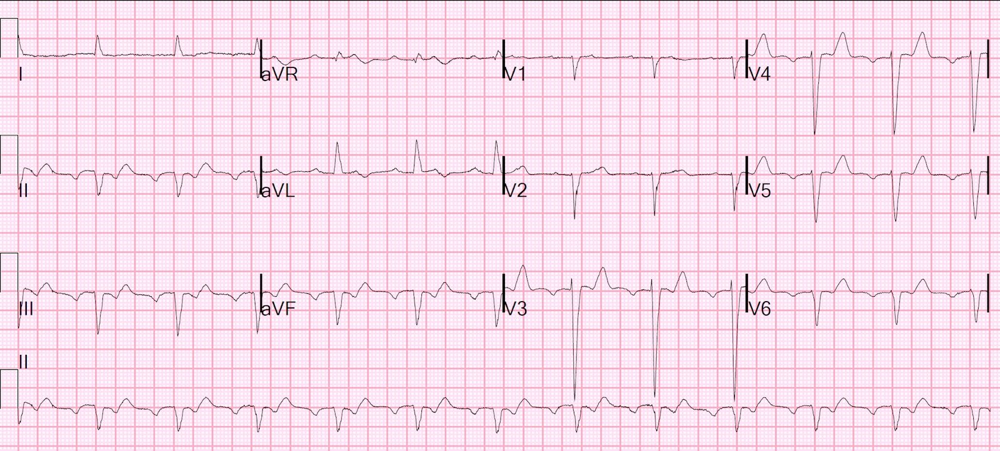
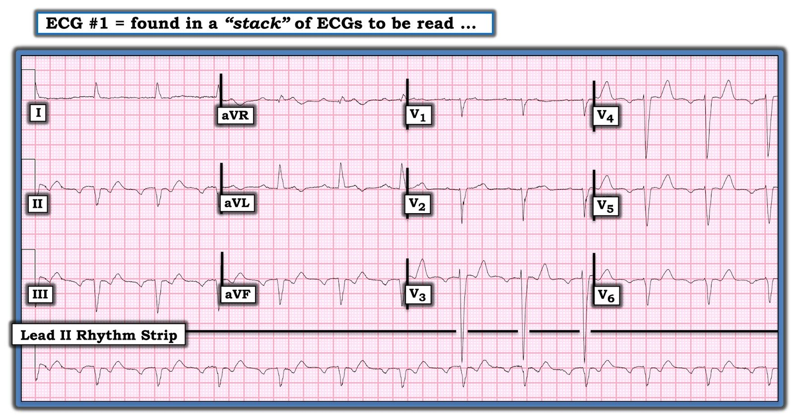
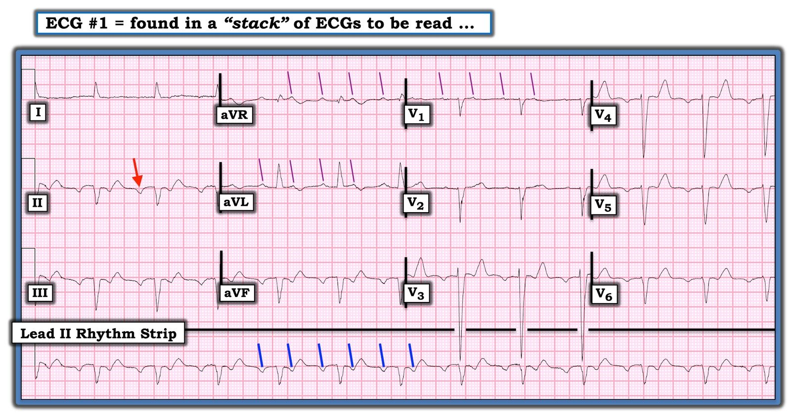

15/11/2020 — Một bệnh nhân Covid ho và sốt. Vì sao sóng ST-T trông bất thường đến vậy?
Bản dịch tiếng Việt của bài "A Covid patient with cough and Fever. Why does the ST-T wave look so abnormal?" – Dr. Smith’s ECG Blog. Giữ nguyên toàn bộ 5 hình ảnh của bản gốc.
Tôi đang đọc lướt một chồng điện tâm đồ và thấy bản này.


Chuyện gì đang xảy ra ở đây?
Thoạt nhìn, đây trông như nhịp nhĩ thấp (low atrial rhythm), với sóng P âm ở các chuyển đạo thành dưới.
Dường như có sóng QS ở các chuyển đạo thành dưới và chậm dẫn truyền trong thất (máy tính đo QRS là 120 ms).
Dường như có những sóng T dạng xuống-lên (down-up) rất kỳ lạ.
Xem kỹ hơn, sóng P ở V1 có vẻ hai pha, điều không nên xảy ra trong nhịp nhĩ thấp.
Rồi chúng ta thấy có một sóng P khác nằm ở giữa, chồng lên sóng T, ở V1.
Rồi chúng ta thấy ở chuyển đạo II, ngoài các sóng P âm còn có một sóng P âm khác nằm giữa QRS và sóng T, điều này giải thích hình dạng ST-T trông bất thường.
Vậy đây là cuồng nhĩ cực kỳ chậm dẫn truyền 2:1. Tần số nhĩ 146, tần số thất 73.
Hóa ra bệnh nhân này bị amyloidosis tim. Tôi ngờ rằng amyloid làm chậm dẫn truyền của cuồng nhĩ.
Sau đó tôi được biết bệnh nhân than phiền ho và sốt, và được chẩn đoán Covid.
Hóa ra ông có tiền sử cuồng nhĩ chậm. Ho và sốt là do viêm phổi Covid nhẹ. Tất cả các lần đo troponin đều âm tính.
Chẩn đoán: Cuồng nhĩ cực kỳ chậm

===================================
BÌNH LUẬN CỦA TÔI, bởi KEN GRAUER, MD (15/11/2020):
===================================
Một số ca điện tâm đồ thú vị nhất mà tôi từng gặp đã được phát hiện khi “đọc lướt một chồng điện tâm đồ” — giống hệt cách Dr. Smith phát hiện ca hôm nay.
- Trước đây, khi tôi đảm nhận vai trò giám sát việc đọc điện tâm đồ của các nhân viên y tế khác — những Câu hỏi tôi luôn phải đối mặt khi gặp một “chồng” lớn các bản ghi nhưng không có thông tin lâm sàng là: i) Chuyện gì đang xảy ra với bệnh nhân (tức là, VÌ SAO điện tâm đồ này được ghi?) — và, ii) Người đọc CÓ nhận ra các dấu hiệu bất thường hay không?
Điện tâm đồ trong ca hôm nay là một bản mà Dr. Smith ngay lập tức biết rằng ông cần phải tìm hiểu chuyện gì đang xảy ra với bệnh nhân này!
- Hóa ra bệnh nhân bị amyloidosis tim. Lý do đến khám là ho và sốt do viêm phổi Covid nhẹ. Không có đau ngực — và tất cả các lần đo troponin đều âm tính. Hồ sơ bệnh án cho thấy rối loạn nhịp này không phải mới xuất hiện.
Vì vậy, dù chúng ta đã biết “các Câu trả lời” (Dr. Smith đã diễn giải điện tâm đồ này ở trên) — tôi nghĩ vẫn đáng để XEM lại điện tâm đồ trong ca hôm nay (Hình 1).
CÂU HỎI:
- Đâu là cách tiết kiệm thời gian nhất để chẩn đoán nhịp và các bất thường QRST mà chúng ta thấy trong ca này?


Hình 1: Điện tâm đồ ban đầu trong ca này (Xem bài).
TRẢ LỜI: Sử dụng một cách tiếp cận hệ thống để đọc điện tâm đồ là cách tiết kiệm thời gian nhất để diễn giải một nhịp phức tạp và một bản ghi 12 chuyển đạo, chẳng hạn như bản ghi trong Hình 1.
- Dù bạn dùng bất kỳ “hệ thống” nào để đọc — Hãy xem nhịp tim TRƯỚC TIÊN! (Ai quan tâm — BẤM VÀO ĐÂY để ôn lại Cách tiếp cận hệ thống mà tôi ưa dùng).
- ĐIỂM THEN CHỐT (PEARL) #1: Bạn có thể biết ngay tức khắc rằng nhịp trong điện tâm đồ #1 không phải nhịp xoang — vì sóng P không dương ở chuyển đạo II (mũi tên ĐỎ ở chuyển đạo II trong Hình 2). Trừ khi có tim sang phải hoặc đặt sai vị trí điện cực — sóng P ở chuyển đạo II phải luôn luôn dương NẾU là nhịp xoang!
ĐIỂM THEN CHỐT (PEARL) #2: Khoảng PR của sóng P âm này ở chuyển đạo II trông dài (tức là, khoảng ~0,24 giây). Dù nhịp nhĩ thấp vẫn có thể có khoảng PR dài — điều này không thường gặp.
- Điểm then chốt là khi bạn thấy một sóng P trông bất thường (tức là, không phải sóng P xoang) ở chuyển đạo II kèm khoảng PR dài hơn dự kiến — Hãy nghĩ đến khả năng có thêm những sóng P phụ!
- Hãy dùng Compa đo! Tôi thực sự mất không quá 3-5 giây để xác nhận bằng compa rằng có 2 sóng lệch âm cách đều nhau trên dải nhịp chuyển đạo II dài trong Hình 2 (các vạch XANH LAM nghiêng trên dải nhịp chuyển đạo dài).
- Dễ dàng xác nhận tương quan AV 2:1 trong điện tâm đồ #1 — vì hoạt động nhĩ 2:1 cũng thấy được ở nhiều chuyển đạo khác (các vạch TÍM mảnh, nghiêng mà tôi đã vẽ ở một vài chuyển đạo khác cho thấy hoạt động nhĩ 2:1).
- LƯU Ý: Trong những ca mà việc có 2 sóng lệch nhĩ trong mỗi khoảng R-R không rõ ràng như ở Hình 2 — tôi chỉ đơn giản đặt compa đúng chính xác MỘT NỬA khoảng R-R — rồi tìm các sóng lệch nhĩ phụ ở bất kỳ chuyển đạo nào trong 12 chuyển đạo cho phép tôi “dò bước” ra hoạt động nhĩ 2:1.


Hình 2: Tôi đã đánh dấu hoạt động nhĩ trong điện tâm đồ #1 (Xem bài).
ĐIỂM THEN CHỐT (PEARL) #3: Cách tiếp cận hệ thống của tôi để đọc nhịp bao gồm việc đánh giá 5 Thông số rất DỄ nhớ nhờ mẹo ghi nhớ này = “Watch your Ps & Qs, and the 3 Rs”. Mẹo ghi nhớ này gợi lại:
- Tìm sóng P (điều mà chúng ta đã làm ở Hình 2).
- QRS rộng hay hẹp? (tức là, Nhịp có phải là nhịp trên thất không?).
- Rate – Tần số (tìm cả tần số nhĩ và tần số thất, nếu hai tần số này khác nhau).
- Nhịp có đều (Regular) không (xem xét cả nhịp nhĩ lẫn nhịp thất).
- Và, nếu có sóng P — Sóng P có liên quan (Related) với các phức bộ QRS lân cận không?
MẤU CHỐT: Việc bạn đánh giá 5 thông số trên theo thứ tự nào không quan trọng — và tôi thường thay đổi thứ tự mình dùng, tùy theo đặc điểm nào dễ nhận ra nhất trên bản ghi tôi đang xem. Nhưng “cái hay” của Mẹo Ghi nhớ “Ps, Qs & 3Rs” — là NẾU bạn dùng nó thường xuyên, bạn sẽ không bao giờ quên đánh giá từng thông số trong 5 thông số thiết yếu này. Nhờ đó, ngay cả khi có thể bạn chưa chắc chắn về chẩn đoán nhịp — bạn vẫn sẽ thu hẹp các khả năng chẩn đoán một cách có hệ thống và tiết kiệm thời gian nhất. Áp dụng Cách tiếp cận Ps, Qs & 3Rs cho nhịp trong Hình 2:
- Sóng P âm ở chuyển đạo II — nên nhịp này không phải nhịp xoang.
- Có hoạt động nhĩ 2:1 — với Rate nhĩ (tần số nhĩ) chỉ dưới 150/phút (và Rate thất (tần số thất) chỉ dưới 75/phút).
- Cả nhịp nhĩ và nhịp thất đều đều (Regular).
- Phức bộ QRS rộng (tức là, khoảng 0,12 giây) — nhưng dù QRS giãn rộng, nhịp trong điện tâm đồ #1 là nhịp trên thất vì có một khoảng PR hằng định (dù kéo dài) trước mỗi phức bộ QRS. Điều này cho chúng ta biết rằng cứ hai sóng P thì có một sóng được dẫn truyền! (tức là, cứ hai sóng P trong Hình 2 thì có một sóng có liên quan (Related) với QRS qua một khoảng PR cố định).
- Tổng hợp lại tất cả: Có dẫn truyền AV 2:1 trong điện tâm đồ #1, với tần số nhĩ ~150/phút. Chẩn đoán phân biệt là giữa AFlutter chậm với ATach kèm blốc 2:1. Chúng ta không được cho biết bệnh nhân này có đang dùng thuốc chống loạn nhịp lâu dài nào có thể làm chậm tần số AFlutter hay không. Hoặc có lẽ, như Dr. Smith đã giả định — sự thâm nhiễm amyloid ở mô nhĩ có thể đang làm chậm dẫn truyền của hoạt động cuồng nhĩ. ĐIỀU CỐT LÕI: Có một nhịp nhĩ đều với tần số ~150/phút. Xử trí cấp cứu sẽ không thay đổi dù không biết nhịp này là AFlutter 2:1 hay ATach 2:1.
PHẦN CÒN LẠI của bản ghi 12 chuyển đạo:
Giờ đã đánh giá xong nhịp — chúng ta có thể diễn giải phần còn lại của bản ghi 12 chuyển đạo.
- Như đã nêu — phức bộ QRS của nhịp trên thất này rộng (tức là, ~0,12 giây) — nên có một dạng rối loạn dẫn truyền nào đó.
- QTc trông dài (tức là, tôi ước tính ~480 ms).
- Có trục lệch trái rõ ở các chuyển đạo mặt phẳng trán — là hệ quả của các phức bộ QS sâu và rộng ở chuyển đạo thành dưới.
- Đánh giá LVH luôn khó khăn khi có rối loạn dẫn truyền làm thay đổi trình tự khử cực thất. Dù vậy — các sóng S rất sâu ở chuyển đạo V3 và V4 (>25 mm ở chuyển đạo V3) gợi ý có lẽ có LVH.
- Ngoài các phức bộ QS rất sâu và rộng ở các chuyển đạo thành dưới — còn có tăng tiến sóng R cực kỳ kém ở các chuyển đạo ngực. Hơn thế nữa, có mất biên độ sóng R từ chuyển đạo V3 trở đi — chỉ còn lại một sóng r rất nhỏ ở các chuyển đạo bên V5 và V6. Điều này cực kỳ bất thường!
- Đánh giá thay đổi ST-T thường khó khăn khi có dẫn truyền AV 2:1. Dù vậy, sau khi “trừ đi trong đầu” các sóng lệch nhĩ 2:1 (chồng lên các phần khác nhau của chu kỳ tim) — tôi tin rằng còn lại các sóng T hơi “đầy đặn” và nhọn ở nhiều chuyển đạo, mà tôi ngờ là không phản ánh thay đổi ST cấp.
Tổng hợp lại tất cả — cho điện tâm đồ #1:
- Có dẫn truyền AV 2:1 với tần số nhĩ ~150/phút (có thể là AFlutter chậm hoặc ATach kèm blốc 2:1).
- Hình dạng QRS kỳ dị. Phức bộ QRS rộng — nhưng không giống bất kỳ dạng blốc nhánh nào đã biết. Dù bản ghi này có thể phản ánh nhồi máu cũ lan rộng ở nhiều vùng chuyển đạo — hình ảnh IVCD (chậm dẫn truyền trong thất – IntraVentricular Conduction Defect) không đặc hiệu mà chúng ta thấy trong điện tâm đồ #1 nên khiến ta lo ngại về một dạng bệnh cơ tim bất thường nào đó hoặc một dạng bệnh tim cấu trúc nền đáng kể khác.
- Tôi nghi ngờ có LVH (các sóng S rất sâu ở V3 và V4).
- Linh cảm của tôi là không có thay đổi ST-T cấp.
- Đối chiếu lâm sàng là thiết yếu để hiểu tổ hợp các dấu hiệu điện tâm đồ nói trên có thể mang ý nghĩa gì.
Các dấu hiệu điện tâm đồ trong amyloidosis tim:
Như đã nêu ở trên — Dr. Smith được biết bệnh nhân trong ca hôm nay bị amyloidosis tim. Cần nhớ rằng “amyloidosis” không chỉ một thực thể chẩn đoán đơn lẻ — mà là một tập hợp các rối loạn trong đó có sự thâm nhiễm chất có bản chất protein vào mô tim.
- Có nhiều phân típ amyloidosis tim khác nhau — tùy theo bản chất cụ thể của loại protein bị lắng đọng. Vượt ra ngoài phạm vi của ECG Blog về y học cấp cứu này — là việc các biểu hiện lâm sàng và điện tâm đồ của các phân típ amyloidosis tim khác nhau có thể thay đổi tùy theo loại protein lắng đọng cụ thể.
ĐIỂM THEN CHỐT (PEARL) #4: Không đi sâu vào các phân típ amyloid cụ thể — tôi nghĩ có thể hữu ích khi nhắc đến một số biểu hiện điện tâm đồ đã được mô tả trong Amyloidosis Tim, với lưu ý rằng không phải mọi bệnh nhân “amyloidosis” đều biểu hiện từng dấu hiệu điện tâm đồ này. Trong số các dấu hiệu điện tâm đồ bạn có thể gặp ở bệnh nhân amyloidosis tim có những dấu hiệu sau (Cheng và cs. và O’Donnell và cs.):
- Điện thế thấp ở các chuyển đạo chi.
- Rối loạn nhịp nhĩ (đặc biệt là AFib hoặc AFlutter).
- Blốc AV.
- Khoảng QTc kéo dài.
- Blốc nhánh (hoặc dạng rối loạn dẫn truyền khác).
- Hình ảnh giả nhồi máu.
Trong các dấu hiệu điện tâm đồ nói trên — tất cả, trừ gạch đầu dòng thứ 1, đều thấy trong điện tâm đồ #1!
- ĐIỂM THEN CHỐT (PEARL) #5: Trong số tất cả các bệnh cơ tim chúng ta thường gặp (tức là, giãn = sung huyết, thiếu máu cục bộ, Takotsubo, phì đại) — không mấy khi chúng ta gặp một trong những dạng hiếm gặp hơn do các bệnh như loạn dưỡng cơ, bệnh thâm nhiễm (tức là, sarcoid, amyloid), các rối loạn bẩm sinh khác, v.v. Việc thấy hình dạng QRS kỳ dị không giải thích được bằng các rối loạn dẫn truyền thường gặp như LBBB, RBBB, IVCD — đặc biệt khi có hình ảnh giả nhồi máu — là một trong những manh mối hữu ích nhất giúp tôi nghi ngờ một trong những dạng bệnh cơ tim ít gặp này.
- Ví dụ — tôi đã điểm lại các đặc điểm lâm sàng và điện tâm đồ của bệnh Duchenne và các Bệnh Loạn dưỡng cơ khác TẠI ĐÂY — cùng một ví dụ khác về Loạn dưỡng cơ Duchenne do Dr. Walsh & Smith đăng trong bài ngày 4 tháng Một năm 2017 của chúng tôi — trong đó có các sóng Q gợi ý hình ảnh giả nhồi máu.